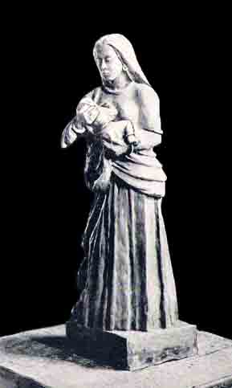
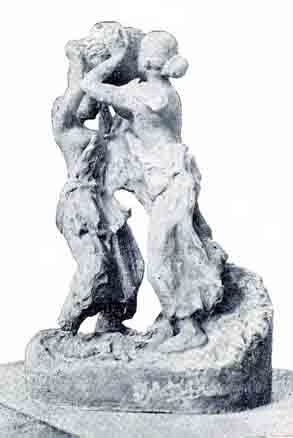

|
 |
 |
|
Mother and Child |
The Daughters of the Soil |
There are excellences in Art beyond what is generally called the imitation of Nature. Whatever is produced from principles and rules only, added to the most exquisite craftsmanship, is yet no more than mechanical work. The essential element in any great Art is Rasa. Rasa–the vision of Beauty–is the life and soul of fine Art; without it, there is no Art. And appreciation of great Art depends on the capacity of the spectator, his knowledge and intellect.
In the wake of the modern School of Indian Sculpture, young artists are rising and devoting themselves to new methods with enthusiasm; and it is pleasing to note that Santiniketan is concentrating on this Art of late and quite distinctive work is being done by young artists working there.
The two reproductions published in this number of ‘Triveni’ are from photographs of the original clay models done by Sjt. Sudhir Ranjan Khastgir of Santiniketan. Sjt. Khastgir, with a natural aptitude for Art, was fortunately sent to Santiniketan before his creative impulse was stunted. It was not long before his genuine artistic feeling ensured a high quality of work, both in painting and modelling. His work has a certain robust individuality, its special quality, and he also has been able to express in his creations the spirit of the Indian life. For instance his "Mother and Child" is a powerful composition and original in its character. The head of the woman is of remarkable beauty combined with the intimate tenderness and affection of a mother. In the same style is "Offering" characterised by delicacy of form and exquisite expression. Though the drapery in both the works reveals a slight influence of the early Greek Art, the conception is entirely Indian and original.
"Winter", an old woman sitting near the hearth, is a typical expression of a winter morning. It reveals no influence of any definite School. On the contrary, we see in it an original style, very bold and impressionistic, and dignified composition.
"The Daughters of the Soil" is, in my opinion, the best of his works produced up till now. There is tremendous force in the whole composition. Simple in its theme, it pulsates with life. The latter two are excellent in sentiment, style, simplicity and beauty. For originality of expression and form, his works are in a class by themselves. It is not out of place to mention here that Sit. Khastgir has only begun his studies two years ago and these works are the result, and he has now undertaken a tour to study South Indian Sculpture. His works were exhibited at the recent exhibition of the Madras Fine Arts Society, and his "Daughters of the Soil" was awarded the first prize for Sculpture.